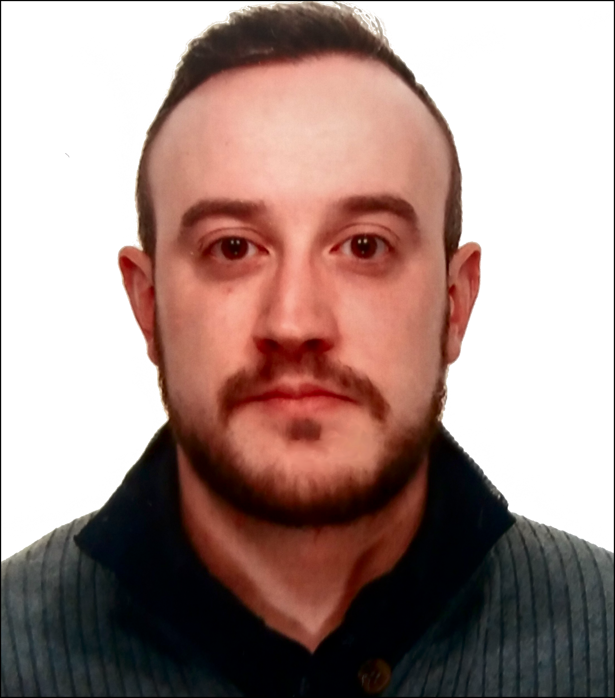

About me

SHORT BIO
Hi! I'm a biomedical engineer, but also an IT enthusiast currently involved in a PhD program in biomedical engineering at the University of Pisa (UNIPI), Pisa, Italy.
I got my BSc at Marche's Politechnic University (UNIVPM), Ancona (Italy) in 2011 and then my MSc at the University of Pisa (UNIPI) in 2015 (you can see a short version of my CV clicking here or a longer one here.
Since a couple of months I am member of the Europen Society for Molecular Imaging (ESMI).
My main research topic is about the quantitative analysis of dynamic time series of PET images, with a particular focus on direct kinetic modeling and clustering of raw sinogram data.
CONFERENCE ATTENDANCE
Recently, I have presented talks and posters in several international and national conferences:
-
MEDICON 2016 [talk] [PowerPoint]
PUBLICATIONS
- Scipioni M., Santarelli M.F., Giorgetti A., Positano V., Fucci S., Landini L. Pharmacokinetic analysis of dynamic PET data: comparison between direct parametric reconstruction and conventional indirect voxel-based estimation, EMIM 2016 (Utrecht 8-10 March 2016),Abstract #104.
- Scipioni M., Santarelli M. F., Positano V., Landini L. The Influence of Noise in Dynamic PET Direct Reconstruction, XIV Mediterranean Conference on Medical and Biological Engineering and Computing (MEDICON), 308–313, Springer International Publishing, 2016.